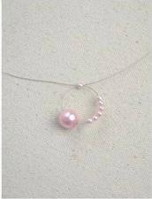
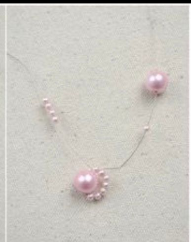
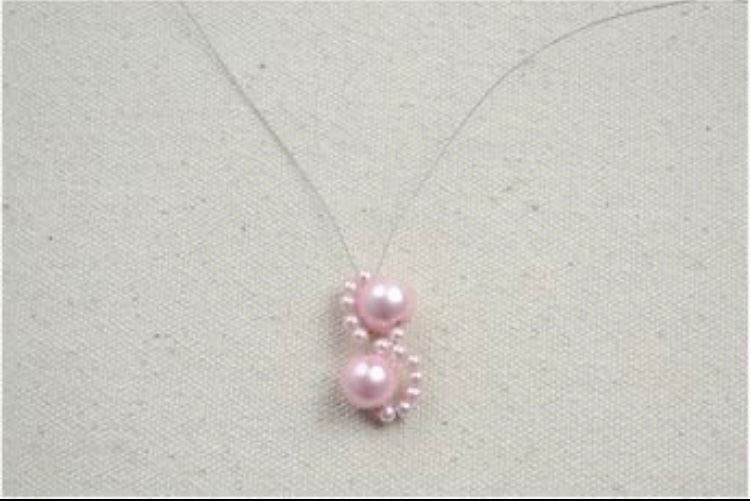

Другие украшение из бисера |
Колечко с бусинкамиШаг 1 Наденьте на леску 7 бусен зеленого цвета (можно чередовать цвета как на картинке). А затем наденьте 6 белых бусен. Проведите леску крест на крест через белые бусены. Шаг 2 Затените все бусенки. Шаг 3 Далее продолжайте надевать 5 бусенок красного цвета. И затягивать их. |